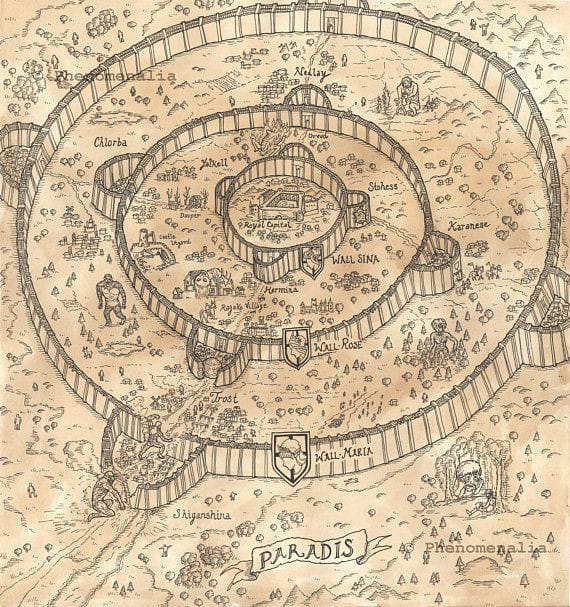

.jpeg)
WELCOME to "Attack On Titan" club
About Us
We are a group of anime addicted people, and our famous one is Attack On Titan which is a legendary series.
About the Series
Attack on Titan is a Japanese manga series written and illustrated by Hajime Isayama. It is set in a world where humanity is forced to live in cities surrounded by three enormous walls that protect them from gigantic man-eating humanoids referred to as Titans; the story follows Eren Yeager, who vows to exterminate the Titans after they bring about the destruction of his hometown and the death of his mother. It was serialized in Kodansha's monthly magazine Bessatsu Shōnen Magazine from September 2009 to April 2021, with its chapters collected in 34 tankōbon volumes. An anime television series was produced by Wit Studio (seasons 1–3) and MAPPA (season 4). A 25-episode first season was broadcast from April to September 2013, followed by a 12-episode second season broadcast from April to June 2017. A 22-episode third season was broadcast in two parts, with the first 12 episodes airing from July to October 2018 and the last 10 episodes airing from April to July 2019. A fourth and final season premiered in December 2020, airing 16 episodes in its first part. A second part consisting of 12 episodes aired from January to April 2022, and a third and final part will air in two halves; the first half premiered in March 2023, and the second half will premiere in late 2023. Attack on Titan has become a critical and commercial success. By September 2022, the manga had over 110 million copies in circulation, making it one of the best-selling manga series of all time. It has won several awards, including the Kodansha Manga Award, the Attilio Micheluzzi Award, and the Harvey Award.
About Walls
The Walls (Maria,Rose,Sina) were three large structures located on Paradis Island that guarded the remnants of Eldia.They were built by the 145th King of Eldia, Karl Fritz, a century ago using countless Colossus Titans. They stalled the other nations from attacking Paradis, under the false threat that the King would unleash the Titans inside upon the world if they did so.The Walls crumbled about a century later when Eren Yeager used to the power of the Founding Titan to free the Titans within them.
|  |
Main Characters
(hover on the images to see them young)


| Eren | Yeager |
Eren Yēgār was a former member of the Survey Corps. He was the main protagonist of Attack on Titan. He lived in Shiganshina District with his parents until the fall of Wall Maria, where he impotently witnessed his mother being eaten by a Titan. This event would lead to Eren's intense hatred towards the Titans as he swore to wipe all of them off the face of the Earth.Later on he ate many of the biggest titans' owners to take their power in order to revange for his people especially for his mom by occuping the world.
Instagram| Levi | Ackerman |
Levi Ackerm, often formally referred to as Captain Levi which is the squad captain lit. "leader of the soldiers" of the Special Operations Squad within the Survey Corps and is widely known as humanity's strongest soldier.The greatest events of him is being always in the first when attacking because of the high energy power he has in this field.He also protect the world once when zeke wants to react with his brother eren to destruct the marley and the peremiter in the biggest war by taking zeke for the forest and hiding him.
Instagram.jpeg)
| Erwin | Smith |
Erwin Smith was the 13th commander of the Survey Corps. Discerning, intelligent, and widely respected, Erwin was an able commander.He taked alot of important lessons from his father which was a historical teacher before his death.While he cared deeply for his men, he did not hesitate to sacrifice them for the good and prosperity of mankind, and his men proved more than willing to stake their lives at his order. During Erwin's career he developed the Long-Distance Enemy Scouting Formation. He later named Hange Zoë as his successor.
Instagram
| Armin | Arlert |
Armin Arlert is the 15th and current commander of the Survey Corps, named so by Hange Zoë before her death. He is also a childhood friend of Eren Yeager and Mikasa Ackerman, and one of the two deuteragonists of the series. Although he appears to be among the physically weakest of the 104th Training Corps, his intelligence and strategic genius makes him an invaluable asset, especially when paired with Hange. After the battle of Shiganshina District, he took the power of the Titans from Bertolt Hoover and came in possession of the Colossus Titan.
Instagram
| Hangi | Zoë |
Hange Zoë was the 14th commander of the Survey Corps, named so by Erwin Smith before his death. Hange was formerly a squad leader in charge of the Fourth Squad, having the duties of innovative inventing and conducting research on Titans, including Eren Yeager. After being promoted to commander, Hange was also in charge of expedition planning, management of the regiment, recruiting, and all the other responsibilities previously handled by Erwin. Upon their death, they were succeeded by Armin Arlert.
Instagram| Mikasa | Ackerman |
After her parents were murdered by human traffickers, Mikasa was rescued by Eren Yeager and lived with him and his parents, Grisha and Carla, before the fall of Wall Maria. She is the last descendant of the Shogun clan that stayed on Paradis Island, thereby related to the Azumabito family, and holds significant political power in Hizuru.She also was one of the most powerful humanity is wars of attacking titans.Her point of weakness was always Eren since he was like her brother and the last member of new her family before finding zeke.
InstagramGallery
.jpeg)
.jpeg)
.jpeg)
.jpeg)
.jpeg)
.jpeg)